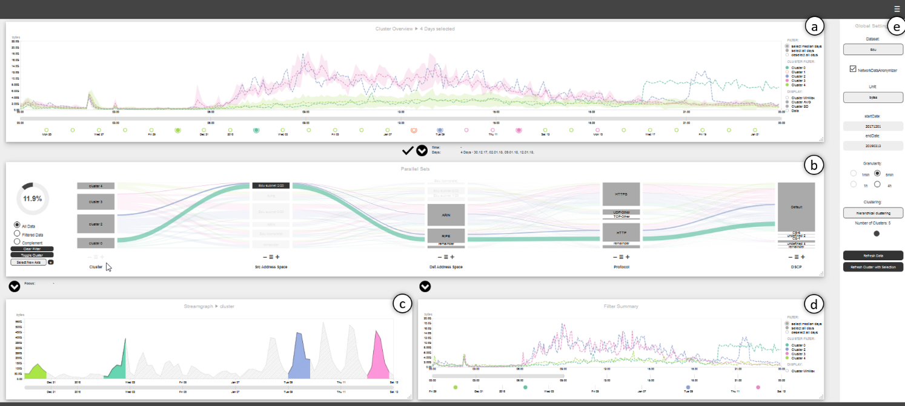

VITALflow: Visual Interactive Traffic Analysis with NetFlow
(opens in new tab)
Venue. NOMS (2022)
Materials.
DOI(opens in new tab)
Abstract. Traffic analysis in large enterprise networks has become a vital task for network experts, as understanding application and user traffic is the basis for proper network management with respect to planning, formulating intents, or analyzing causes for implausible behavior. In such networks, NetFlow provides input to network monitoring systems that typically show time series visualizations along different data dimensions. We studied tasks and requirements of network experts and derived a visual analytics approach that improves their analytic workflow as it enables for exploration of large time spans quickly in a multidimensional manner. Our approach guides users and improves the scalability of analyses through a novel combination of a clustered time series view and filtering in interactive parallel sets into a coherent visual analysis framework. Clustering reveals typical patterns and deviations from the daily norm and serves as entry point to exploring, filtering and comparing multiple dimensions in the parallel sets view. In addition, we briefly discuss the feedback we received on two case studies with network experts.
Link to this page: